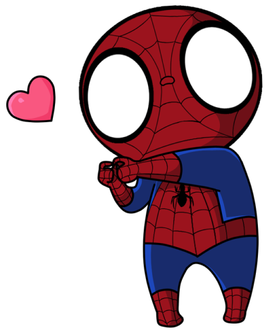

Bio

I'm the amazing Spiderman. I do cool things like save the world from evil.
Education
- The Streets, 2004 - Present
- Superhero University, 2000 - 2004
- HeroTime Collegiate Institute, 1996 - 2000
Experience
I don't like to brag about all the amazing epxeriences I've had so I'll keep this section short. Besides, I like being mysterious like that
Achievements
I've battled many evil villains. Here's a list of my most noteable achievements:
- Squashed Dr. Octopus
- Annihilate Sandman
- Defeated Green Goblin
- Took out the Kingpin